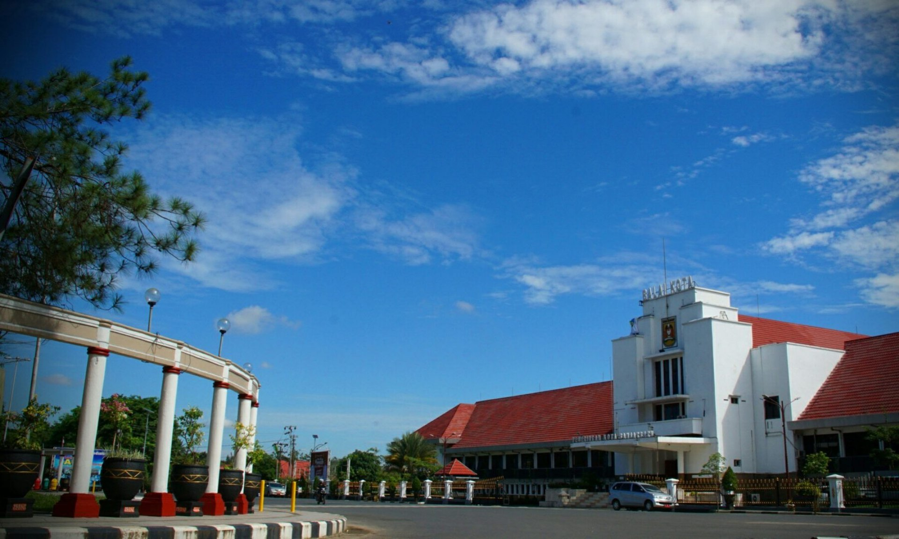
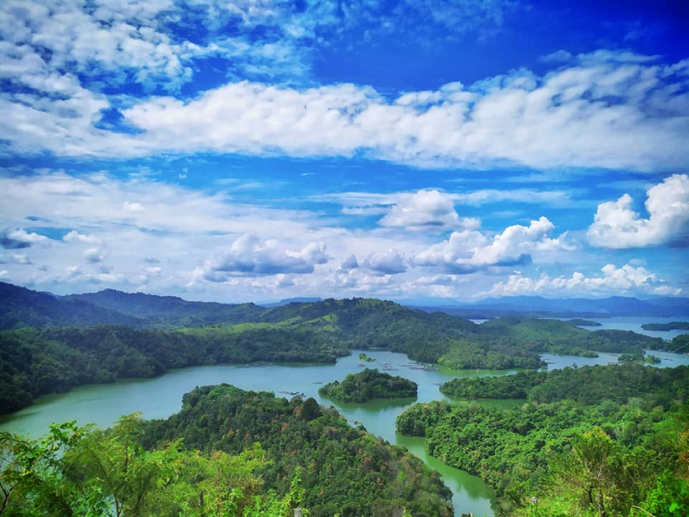
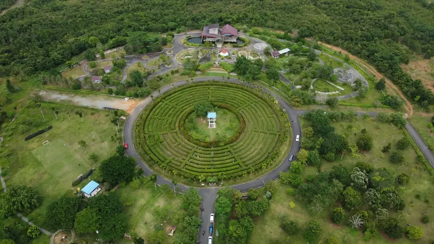
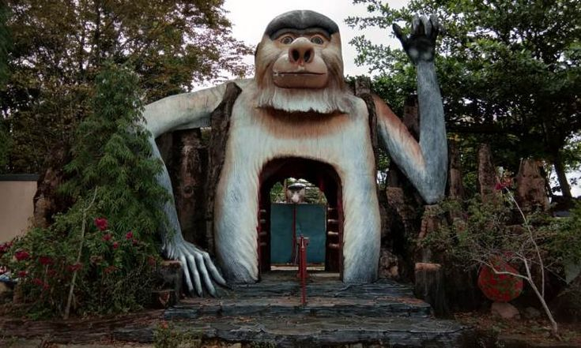
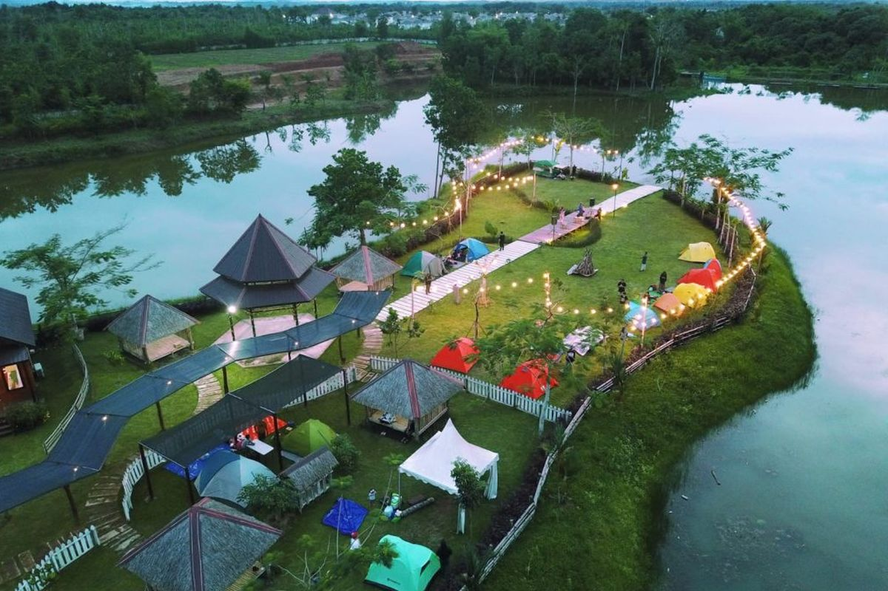

Sejarah

Wilayah ini, dulunya adalah perbukitan di pinggiran Martapura yang dikenal dengan nama Gunung Apam.
Daerah
Gunung
Apam dikenal sebagai daerah peristirahatan buruh-buruh penambang intan selepas menambang di Cempaka.
Daerah
Cempaka
itu sendiri merupakan kawasan pemukiman Suku Banjar yang tertua di Kota Banjarbaru.
Pada era tahun 1950-an, Gubernur Kalimantan Dr. Murdjani dibantu seorang perencana D.A.W Van der
Pijl
merancang
Banjarbaru sebagai Ibukota bagi Provinsi Kalimantan, sampai akhirnya Kalimantan dimekarkan menjadi 4
provinsi
pada
tahun 1957. Namun pada perjalanan selanjutnya, perencanaan ini terhenti sampai pada perubahan status
Kota
Banjarbaru
menjadi Kota Administratif.
Kota Banjarbaru berdiri berdasarkan Undang-Undang Nomor 9 Tahun 1999. Lahirnya undang-undang
tersebut
menandai
berpisahnya Kota Banjarbaru dari Kabupaten Banjar yang selama ini merupakan daerah administrasi
induk.
Kota
Banjarbaru yang sebelumnya berstatus sebagai Kota Administratif, sempat berpredikat sebagai Kota
Administratif
tertua di Indonesia.
Geografis
Kota Banjarbaru terletak pada koordinat 03°27' - 03°29' LS dan 114°45' - 114°48' BT. Posisi
geografis
Kota
Banjarbaru terhadap Kota Banjarmasin adalah 35 km sebelah tenggara Kota Banjarmasin. Selain itu,
Kota
Banjarbaru
merupakan kota penghasil intan yang terdapat di Kecamatan Cempaka yang merupakan pusat pemukiman
atau
perkampungan
tertua Suku Banjar yang ada di kota ini.
Drainase di Kota Banjarbaru tergolong baik, secara umum tidak terjadi penggenangan. Namun ada daerah
yang
tergenang
periodik yaitu tergenang kurang dari 6 (enam) bulan, terdapat di Kecamatan Landasan Ulin yang
merupakan
peralihan
daerah rawa (persawahan) di Kecamatan Gambut dan Aluh-Aluh.

Wisata
Wisata Banjarbaru memukau wisatawan dengan daya tariknya. Sebagai ibukota provinsi Kalimantan
Selatan, Banjarbaru ternyata tidak punya pantai. Kendati demikian, kota kecil ini masih punya tempat
wisata lain yang tidak kalah seru untuk dikunjungi. Terutama wisata berupa taman kota, danau, dan
kebun raya.
Kebun Raya Banua

Menyoal wisata Banjarbaru memang selalu ada saja bahasannya. Salah satunya membahas tentang
Kebun
Raya
Banua.
Sesuai
dengan namanya, wisata ini merupakan tempat pelestarian berbagai jenis tanaman, terutama tanaman
obat
dan
tanaman
langka khas Pulau Kalimantan. Tempat wisata di Banjarbaru ini menjadi favorit keluarga, apalagi
lokasinya
yang
strategis sehingga mudah dijangkau. Kamu hanya butuh sekitar 15 menit perjalanan dari pusat kota
Banjarbaru.
Bekantan Park

Jika ingin liburan bareng keluarga, maka sempatkan mampir ke Bekantan Park. Tempat ini memiliki
area
outbound yang luas. Bermacam-macam wahana seru nan menantang layak untuk dicoba seperti flying
fox
dan
jembatan tali. Selain itu, ada kebun binatang dan taman bermain yang tidak kalah menyenangkan.
langka
dan hampir punah. Selain itu, kamu bisa melihat langsung hewan lain seperti beruang, biawak dan
kura-kura.Jangan lupaabadikan momen dengan berfoto di depan patung bekantan.
Amanah Borneo Park

Amanah Borneo Park dinobatkan sebagai objek wisata Banjarbaru yang paling besar. Pasalnya, luas
taman
ini mencapai 90 hektar. Disebut sebagai wisata all in kamu bisa mencoba banyak wahana. Mulai
dari
wahana
yang high ropp yang memacu adrenalin sampai menjelajahi rumah Hobbit dan rumah nenek sihir. Ajak
anak ke
area kebun. Ada juga area kambing Alpine dan area ayam kalkun. Masih ada water splash park bagi
pengunjung yang gemar main air.